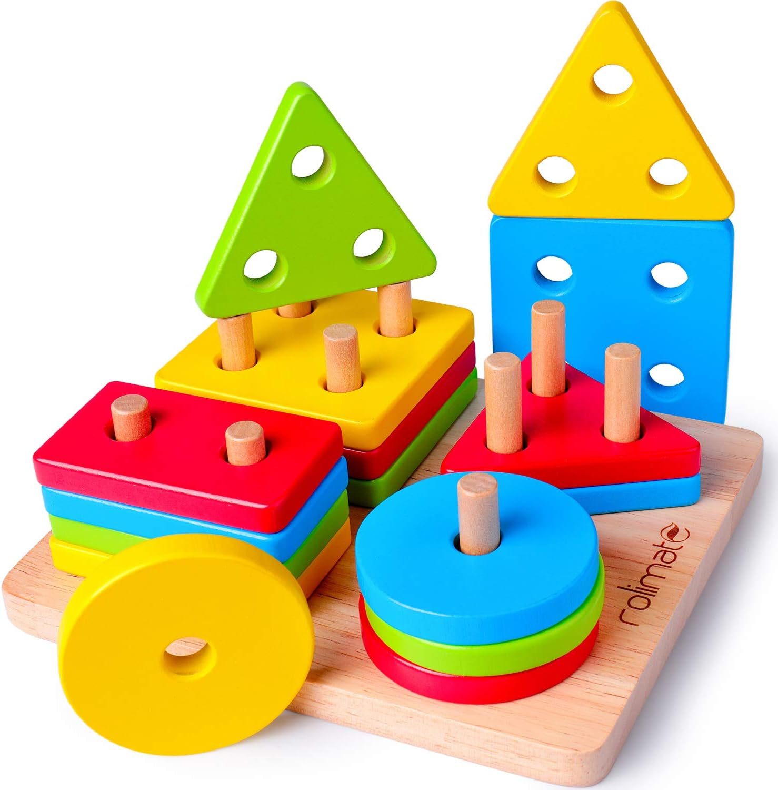

Bienvenidos al mundo de Gepo Didacticos

Apilador
Con este apilador, los más pequeños de casa no solo se familiarizarán con las figuras geométricas y los colores sino que entrenarán su coordinación y motricidad fina. El juego confeccionado en madera de calidad incluye una base con apiladores donde los niños deberán colocar las distintas piezas, ya sea por forma o color, para diseñar creativos bloques de construcción. Las piezas geométricas son robustas y fáciles de manipular, de manera que también se pueden usar para crear figuras sobre el suelo, otra manera de estimular la imaginación y la creatividad infantil desde una edad temprana.
Volver al inicio